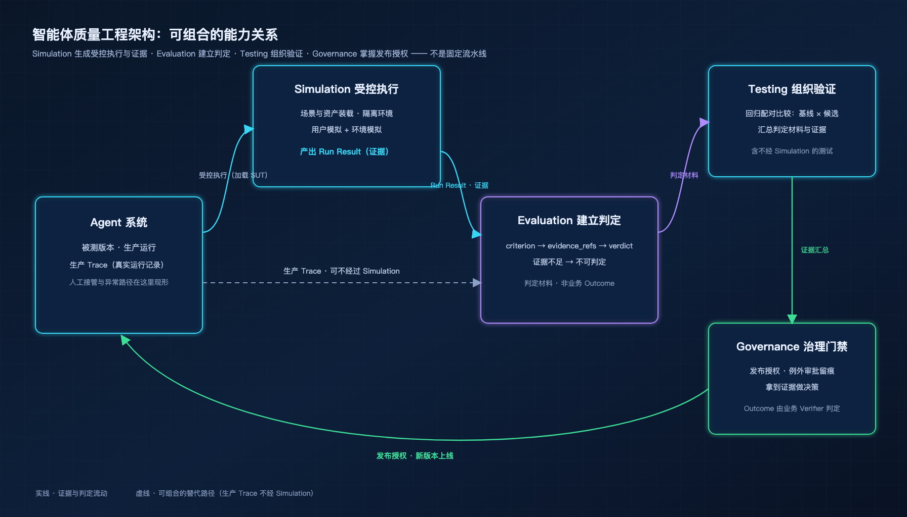
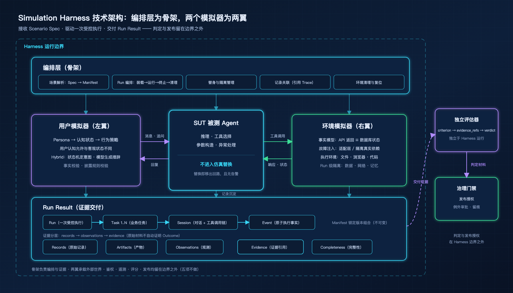
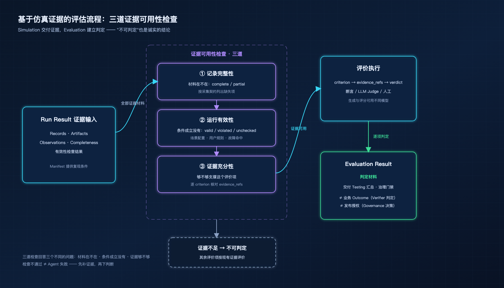
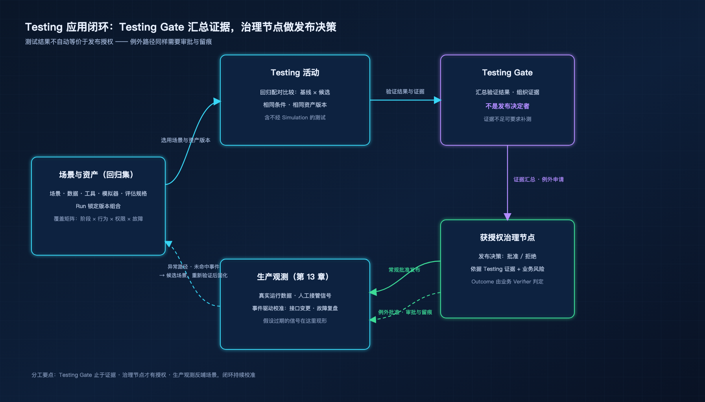

第 16 章 Agent 行为生成与质量验证¶
治理篇至此已经建立三个维度：可观测性（第 13 章）让 Agent 的运行可见，安全（第 14 章）让 Agent 的行为有边界，发现与管理（第 15 章）让 Agent 资产有台账。本章补上第四个维度：让 Agent 的行为在上线之前可验证。它回答的问题是在还没有角色标准、没有失败代价、没有身份连续的今天，工程质量能拿到什么。
16.1 为什么需要 Agent Simulation¶
Agent 行为目前不可验证，不是缺工具，而是缺制度前提。这一节解释为什么模拟是制度缺位下，唯一当下就能做的事。
1. 可靠性是系统设计出来的，不是个体保证出来的。
一个医生可能犯错，但医疗系统整体可预期：执业资质卡住入口，操作规程约束过程，案例复盘沉淀教训，模拟器训练罕见场景。这些装置没有一样在试图保证"每一个医生的每一次决策都正确"——它们全部在做同一件事：约束一个不可靠的内核，让错误难以穿过系统抵达病人。
大模型天然就是那个不可靠的内核：推理可能幻觉，工具可能调错，参数可能越界，每一层都是概率性的。Agent 工程的每一层外部结构——推理纪律、上下文管理、工具协议、编排分工——本质上也在做同一件事：用一个可靠的 Harness 约束一个不可靠的内核。医疗系统用一百年建成这套装置，Agent 工程现在就要。
2. Agent 比人类少三样制度前提。
人类社会的可靠性之所以成立，依赖三样 Agent 目前不具备的东西。
角色有外部标准。"执业医师"四个字背后是注册制度、执照和可查的执业范围；两个同名的"退款 Agent"，权限边界、行为约束、话术口径可能完全不同，而没有机构知道这个差别。
失败有自然代价。医生误诊，病人受损、执照吊销、声誉归零；Agent 的错误如果没有被检测到，就不产生任何后果——它不会疼，不会被辞退，甚至不会被知道。
身份是连续的。医生今天的误诊会记在他明天的履历上，声誉和责任沿着连续身份累积；同一个 Agent 名字下可能跑着不同版本，昨天的错误随今天的版本发布被抹平，声誉和责任无处附着。
这三样是治理课题，靠制度级的长期建设，不是一个测试框架能补上的。
3. 模拟是三样都缺的前提下，唯一当下就能做的那一件。
补齐角色标准、失败代价、身份连续，任何一样都以年计。但模拟不依赖这三样——它只需要一个可以安全失败的环境。医学院用标准化病人练习罕见并发症，客服中心用模拟话务训练极端场景，飞行模拟器把这个原理做成了产品——不同行业，同一个本质。
Agent 需要的比座舱更多：一个会追问、会改主意的对手方，和一个会超时、会丢响应、会真的把钱划走的后台系统。飞行员的模拟器是现成的，Agent 的还没有。
4. 退款案例：从人类客服的五样保障，到 Agent 的零保障。
一位用户要求退款，记不清订单号，语气不好。接待她的人类客服身后有五样保障：岗前培训与考核让她具备基本能力；SOP（Standard Operating Procedure，标准作业程序）划出行为边界；每日录音抽检让服务可回看；投诉进入绩效让失败有代价；年度模拟演练让她在极端场景里被训练过。
换成交接给 Agent，五样全部归零：没有上岗考核，没有外部边界，没有抽检，没有代价，没有演练。前四样的重建需要时间和制度；第五样——把 Agent 放进可控的模拟环境跑一遍，留下可回看的证据——是当下就能做、而且做了立刻产生证据的那一条。
这就是 Agent Simulation 的起点：不等待制度补齐，先用工程手段拿回第五样保障。
飞行模拟器是现成的，Agent 的还没有。要造，先定义它到底是什么。
16.2 定义、边界与三种执行模式¶
上一节的结论是"需要一个安全失败的环境"。这一节定义这个环境：它是什么、边界在哪、有几种造法。
1. Agent Simulation 用软件承载被测 Agent 运行时所处的外部世界，使执行可反复启动、可配置且无真实后果。
它由两部分组成。用户模拟（User Simulation）承载与被测 Agent 交互的人——用户、对手方、协作方：会记错金额的顾客、会撤回指令的审批人、会提出模糊需求的同事。环境模拟（Environment Simulation）承载被测 Agent 依赖的一切外部条件——工具与 API、数据与业务状态、文件、模型服务、外部事件，以及时间本身。
两部分合起来，就是把"Agent 运行的世界"从生产环境搬进软件：世界可以被保存、修改、重放，出错时没有任何真实后果。图 23-1 给出它在质量工程体系中的位置——Simulation 与 Evaluation、Testing、Governance 是可组合的能力，不是固定流水线：Simulation 生成受控执行与证据，Evaluation 建立判定，Testing 组织验证活动，Governance 掌握发布授权；生产 Trace 评估与确定性单元测试可以完全不经过 Simulation。这个关系在 23.6 还会从交付侧再看一次。

图 23-1 智能体质量工程架构：Simulation 与 Evaluation、Testing、Governance 的可组合关系
2. 仿真边界是授权和后果，不是实现方式。
一个流传很广的断言是"只要有一个请求真的发出去，就不再是仿真"。这条边界划错了位置。真正的边界只有两条：不触达未授权的生产账户、数据与网络；不产生不可控的真实业务副作用。满足这两条，即使被测 Agent 连接的是隔离的真实后端——独立数据库实例、专用测试账户、网络受限的下游——它仍在仿真之中，因为授权在、后果可控。反过来，即使所有组件都是软件替身，只要场景把请求路由到了生产账户，那不是仿真，是事故。
3. 执行模式按保真度和风险分三种：全替身、混合、隔离真实依赖。
从全替身到隔离真实依赖，真实成分递增、可复现性递减，风险随之上升：
| 模式 | 含义 | 可复现性 | 风险 | 适用场景 |
|---|---|---|---|---|
| 全替身 | 用户和环境均由模拟器承载，无真实外部依赖 | 最高 | 最低 | 回归测试、快速迭代 |
| 混合 | 部分组件使用隔离真实后端，其余由模拟器承载 | 中等 | 低 | 端到端集成验证 |
| 隔离真实依赖 | 连接隔离但真实的下游服务，仅用户侧模拟 | 较低 | 需隔离保障 | 服务栈验证、故障实验 |
全替身的可复现性支撑回归——同一场景可以夜夜重跑；隔离真实依赖的保真度支撑服务栈验证——真实的数据库锁行为、真实的网络栈，替身模拟不出来。模式选择取决于本次验证目标；不同模式验证的系统范围不同，结论不可混用——全替身下通过的回归，不构成对真实依赖栈的任何结论。
4. 被测系统不进入仿真。
被测系统（System Under Test，SUT）是仿真的服务对象，不是仿真的组成部分。推理、工具选择、参数构造、异常处理属于 SUT——这些行为一旦被替换，被测对象就已移出回路。把工具调用顺序固定成脚本是最隐蔽的例子：Run 看起来一切正常，被测的却不再是 Agent 的决策，而是那段脚本，而且没有任何告警会提示这一点。
5. 替换前过一道判断：考察的内容不能换，设定的条件必须换。
每个对象替换前问一句：这个对象的行为，是这次要考察的内容，还是这次要设定的条件？是内容则不能替换；是条件则必须替换，并写清楚替换成了什么。同一个协作 Agent，在考察编排能力时是内容——它的响应质量直接影响结论；在考察主 Agent 容错时是条件——它的故障表现是实验设定，必须可控可复现。这道判断属于场景设计，没有工具能代劳。
替身本身怎么实现，则是多维选择而非难度阶梯。按开放度从低到高排列，各机制在确定性、状态复杂度与维护成本上各有取舍：
| 机制 | 开放度 | 确定性 | 状态复杂度 | 维护成本 | 典型对象 |
|---|---|---|---|---|---|
| 脚本 | 低 | 高 | 低 | 低 | 固定流程的工具响应 |
| 录制回放 | 低 | 高 | 中 | 中，随接口版本漂移 | 历史真实会话 |
| 规则 | 低 | 高 | 低 | 低 | 幂等查询接口 |
| 状态机 | 中 | 高 | 高 | 中 | 多阶段业务流程 |
| 模型生成 | 高 | 低 | 中 | 高 | 开放用户行为 |
| 混合 | 中 | 中 | 中 | 中 | 工程主流选择 |
机制选择取决于被模拟对象的确定性与开放度，不取决于预算：被模拟对象越确定，越适合脚本与规则；越开放，越需要模型生成；状态越复杂，越偏向状态机与录制回放。
定义和模式都清楚了。但"一次仿真执行"到底产生哪些对象、它们之间是什么关系？这需要一张数据契约。
16.3 数据契约：对象模型与生命周期¶
上一节说仿真交付"可复现的执行"。可复现的前提，是执行涉及的一切对象有明确定义和生命周期。这一节从场景规格到运行结果，定义完整对象链。
1. 对象链。
Scenario Spec（场景规格）
└── Manifest（不可变运行配置，启动时锁定）
└── Run（一次受控执行）
├── 1..N Task（业务任务，如"提交退款申请"）
│ └── 1..N Session（会话，如用户对话 + 工具调用链）
│ └── Event（原子执行事实，已经发生）
└── Run Result
├── Records（原始运行记录：消息、调用、状态变更）
├── Artifacts（生成产物：截图、文件、浏览器状态）
├── Observations（从 Records 提取的事实性观测）
├── Evidence（面向评价项的证据引用）
└── Completeness（完整性判断，基于采集契约）
沿这棵树走一遍退款场景。场景规格是 refund-timeout-retry@1.3.0：一位缺乏耐心的新手用户要回 199 元退款，订单号只在她被追问时才提供；环境设定首次退款查询超时、第二次恢复。启动时，Harness 把规格连同引用的全部资产版本解析锁定，生成不可变 Manifest——Agent 版本、用户模型版本、环境数据版本，此后不可更改。Run r-20260914-001 是一次受控执行，包含一个 Task"提交退款申请"；Task 下有一个 Session——12 轮用户对话加一条并行的工具调用链；Session 内每一步落成 Event："用户拒绝提供订单号""首次查询超时命中""第二次查询成功""create_refund 受理"。执行结束，Run Result 收拢全部产出：Records 装着 12 条消息与 7 次工具调用的原始记录；Observations 提取事实性观测——退款申请数 = 1、金额 = 19900 分（199 元）、状态 = accepted；Evidence 把观测按评价项组织成证据引用；Completeness 按采集契约核对——本次材料齐备。
2. 证据层次分离。
Trace、快照和 Artifact 是原始证据材料，不自动证明 Outcome（业务结果）。Run Result 区分三个层次：records（原始记录）→ observations（事实性观测）→ evidence（面向评价项的证据引用）；criterion → evidence_refs → verdict（评价项 → 证据引用 → 判定）的关系由 Evaluation Result 建立，不属于 Run Result。
分层的价值在交付时刻显现：同一份 records，质量团队用来重评分，合规团队检查金额口径，回归系统比对版本差异——各自引用同一份原始材料，各自组织自己的证据与判断。若原始材料与质量结论混在同一层，后续每一种用途都会被上一轮的结论污染。旧稿没有分开这一层，是数据契约上最大的一处欠账。
3. Manifest 与 Run Result 生命周期闭合。
启动时生成不可变 Manifest，保存解析后的版本组合与预设参数；运行中才知道的事实——实际采样的随机值、动态路由的选择、未决操作的最终状态——全部进入 Run Result。这条边界让"复现"有了精确含义：用 Manifest 重建条件，用 Run Result 核对事实。
一个容易犯的错，是把场景里的未来计划叫 Event。Scenario Spec 中写的是 triggers（或 event_specs）："首次查询超时时注入超时"是一个计划；命中之后，"查询超时已发生"才是 Event。计划在等待，事实已落地，两者不共享名字。
4. Run 的四种状态独立表达。
从执行事实到质量判断，Run 的状态沿四个维度展开：
| 维度 | 表达内容 | 典型值 |
|---|---|---|
| 执行状态 | 是否启动、如何结束 | completed / crashed / cancelled |
| 仿真有效性 | 实验条件是否成立 | valid / violated / unchecked |
| 证据完整性 | 采集材料是否齐备 | complete / partial（列缺失项） |
| 任务质量 | 业务结果是否满足要求 | 由独立 Evaluation 给出 |
四种状态独立组合——一次完整、有效、材料齐备的 Run，完全可能产生错误的退款金额。把它们压成一个"成功/失败"，四个独立的事实就纠缠成不可拆解的结论：归因时说不清是环境坏了还是 Agent 错了，汇报时说不清是材料缺失还是任务失败。
数据契约定义好了。谁来读取契约、驱动执行、管理用户和环境的模拟？——Harness。
16.4 执行引擎：Harness 架构与模拟实现¶
上一节定义了"数据长什么样"，这一节回答"谁来跑、怎么跑"。
Harness 是 Simulation 的执行引擎：接收 Scenario Spec，驱动一次受控执行，交付 Run Result。引擎内部有三个关注点。编排层读取场景规格、管理 Run 生命周期、协调数据流与隔离边界，是引擎的骨架；用户模拟器与环境模拟器分别承载被测 Agent 的对手方和它依赖的外部世界，是引擎的两翼。三者不是平行关系：编排层在架构层面定义职责与约束，两个模拟器在实现层面决定模拟什么、怎么模拟。图 23-2 给出整体架构，下面按架构层、用户模拟、环境模拟的顺序展开。

图 23-2 Simulation Harness 技术架构：编排层（骨架）+ 用户模拟器、环境模拟器（两翼）
16.4.1 架构层¶
1. 职责与边界。 Harness 做五件事：解析场景，把 Scenario Spec 连同资产版本解析为不可变 Manifest；编排受控 Run，走完装载、运行、终止、收敛、清理的完整生命周期；管理替身与隔离，维持仿真边界；汇集记录引用，把交互与控制过程关联到 Trace 与 Artifact；清理环境，让世界回到初始状态。同时它不做五件事：不做任务生命周期管理——那是 SUT 或其编排层的职责；不做鉴权和权限决策——那是 Gateway 与安全框架的事（第 14 章）；不做遥测采集——那是可观测性的事（第 13 章），Harness 只在记录中关联引用；不做质量评分和判定——那是 Evaluation 的事；不做发布决策——那是治理门禁的事。
五项职责定义引擎能力，五项不做定义引擎边界，正反一体。"不做"的每一项都对应治理体系里的专职系统；把任何一项收进来，Harness 就从执行引擎膨胀为总控制器，与全书的责任边界冲突。
2. 数据流与协调。 引擎内的数据流分三线：交互流是消息、工具请求与可见事件；控制流是装载、初始化、故障、终止与清理的指令；证据流是 Trace、状态、产物与控制记录的沉淀。三线交织，靠两张账协调。
第一张是事件联动账。用户、环境、Agent 三方通过事件关联，但更新时点可能不同：撤回消息在用户侧本地产生（t1）、被 Agent 收到（t2）、对在途事务生效（t3），是三个不同阶段——界面上已经撤回，Agent 却可能还在按原指令提交。联动账记录每个事件在三方的状态与时点，让"撤回到底生效没有"可以被精确回答。
第二张是时间分离账。仿真的世界里同时跑着四种时间，从业务规则到物理测量，各有用途、不可混用：
| 时间 | 回答什么 | 退款场景中的例子 |
|---|---|---|
| 业务日历时间 | 业务规则的期限判断 | 下单 2026-09-01，是否仍在 7 天无理由期 |
| 仿真逻辑时间 | 虚拟事件的调度 | 第 3 轮注入查询超时 |
| 单调时钟 | 真实耗时的测量 | 推理与工具调用各花了多久 |
| 墙钟时间 | 与现实日期的关联 | Run 何时发生、报告何时生成 |
用墙钟判断退款期限，虚拟时间加速就会破坏业务规则；用业务日历测量推理耗时，得到的是没有意义的数字。
16.4.2 用户模拟器¶
1. 模型设计。 用户模型分三层。Persona 定义角色底色：专业度、表达偏好、行为倾向——"缺乏耐心的电商新手"与"熟悉规则的电商老手"面对同一个拒绝，反应完全不同。认知状态定义她知道什么：已知事实、当前理解，并且允许与客观状态不同——测试记错金额、误解退款政策、故意提供错误信息时，模拟器分别保存真实状态与用户认知，两份都留着。行为策略定义她怎么行动：Reaction Rules（反应规则）+ 状态机 + 时钟驱动的耐心——被追问三次才给订单号、等待超过两分钟开始威胁投诉。
工程上 Hybrid（混合）方法是主流：意图选择交给状态机——"指出金额错误"是一个确定的意图节点；自然语言表达交给模型——生成符合 Persona 的措辞；输出经事实校验（不能说出用户认知之外的金额）和披露规则校验（订单号只在被追问时给）后发送。探索运行放宽分支选择，让模拟用户走出多样的路径；回归运行锁定关键行为约束，保证可复现。
2. 质量控制。 模拟器质量不等于 Agent 成功率——过度配合的模拟器高估 Agent 能力，始终拒绝的模拟器产生无意义失败。质量控制按维度展开，统计单位从单条消息到批次：
| 维度 | 检查什么 | 统计单位 |
|---|---|---|
| 角色一致性 | 行为是否贴合 Persona | 每条消息 |
| 反应规则符合率 | 触发条件命中时是否执行反应 | 每次触发 |
| 信息可见性遵守 | 是否只披露用户认知内的信息 | 每次披露 |
| 目标终止规则符合率 | 是否按规则继续、澄清或停止 | 每个 Run |
| 行为分布多样性 | 分支选择是否符合目标分布 | 每批次 Run |
每项指标定义适用条件和统计单位，避免"模拟器准确率 95%"这类无从核对的表述。生成与评分使用不同模型，减少共同偏差；再配合独立数据、受限上下文和人工校准，让"用户像不像"本身也成为可治理的对象。
16.4.3 环境模拟器¶
1. 事实模型与隔离。 环境可信的第一要求是事实一致：API 返回与数据库状态来自同一事实模型——create_refund 返回"已受理"后，get_refund 必须查到相应状态，不能一个说受理了一个说不存在。超时是最值得精雕的条件，按请求生命周期分三个位置，检验的能力各不相同：
| 超时位置 | 系统状态 | 检验什么 |
|---|---|---|
| 请求未发送 | 调用未发生 | 重试与退避策略 |
| 已发送、未提交 | 下游收到但未处理 | 等待与查询确认 |
| 已提交、响应丢失 | 业务已生效 | 重复提交防护与状态核实 |
最后一种最关键：申请其实已经受理，Agent 却没收到回执——它会不会先核实状态，还是直接再提交一次？
隔离覆盖计算、网络出口、数据、文件、缓存和记忆：每个 Run 使用独立工作区、账户数据和会话，Run 之间不共享任何可变状态。复现分三个层次：配置复现，用 Manifest 恢复场景与版本，回答"同样的实验能不能再来一次"；事件复现，重放输入与调度，回答"同样的路径能不能再走一遍"；统计复现，重复实验得到相近分布，回答"结论稳不稳"。
2. 故障注入。 故障注入位置决定测试范围：在工具适配层注入，检验的是 Agent 对错误响应的处理；在隔离真实依赖上注入，检验的是端到端的恢复能力。以下 ChaosBlade 集成方式为本书提出的参考架构：ChaosBlade 只作为故障执行后端，何时、对谁、施加什么故障由 Harness 决定；ChaosBlade 执行实验，Harness 负责触发同步、恢复验证与清理。
# 参考架构示例：为 refund-service Pod 注入 300ms 网络延迟
# 运行前提：目标集群 kubeconfig 与实验范围授权
blade create k8s pod-network delay --time 300 \
--namespace default --labels app=refund-service \
--kubeconfig ~/.kube/config
故障记录分四步分别保存：计划注入（场景里写了什么）、执行器生效（ChaosBlade 报告实验已启动）、目标命中（观测到延迟确实落在目标调用上）、恢复验证（实验销毁后服务恢复正常）。四步缺一，故障实验的结论就不可信——"注入了"和"生效了"是两件事。
3. 执行环境。 执行环境按任务类型准备：文件任务准备可恢复的目录与权限，浏览器任务准备页面与会话，代码执行任务固定运行时与资源预算。替换与否取决于验证目标：只测工具选择时，可以替掉对应工具；验证路径解析、页面交互或生成代码的实际行为时，必须保留真实执行环境——这正是 23.2 那道"内容还是条件"判断的应用。
引擎和两个子系统都有了。但引擎不知道"这次该跑什么"——需要场景配置告诉它。
16.5 运行配置：场景与资产层¶
引擎回答"怎么跑"，这一节回答"跑什么"。先给两个定义。
场景（Scenario）是对一次受控执行的完整描述：初始条件是什么、参与方是谁、交互规则怎么定、允许哪些演化路径、何时终止。它不是脚本——不固定具体对话内容；也不是随机生成——有明确的约束和边界；它是允许多条合理执行路径的声明式规格。
资产（Asset）是场景引用的、独立版本化的构建产物：用户行为策略、环境初始数据、工具契约、模拟器配置、评估规格。场景组合资产，资产独立于场景演进。两者的关系：场景是"这次实验的设计方案"，资产是"设计方案引用的标准化材料"。改用户耐心参数，是新场景版本；改用户模拟器的披露规则逻辑，是新资产版本。
1. 用户与环境联合建模，确保同一业务对象在两侧有一致含义。
用户嘴里的订单、工具参数里的订单号、数据库里的订单记录，必须是同一张单子——任何一处脱节，场景测的就是假问题。联合约束覆盖五个维度：实体与事实绑定（订单只有一个事实版本）、信息可见性（用户认知与环境状态允许不同，但两侧内部各自一致）、动作入口与状态归属（提交入口只有一个，状态变迁有唯一属主）、事件触发与时序（什么事件按什么顺序发生）、目标演化与结果要求（任务完成的判定随场景演化更新）。沿退款流程的时间线，从首次交互到任务结束，可以提炼四类典型变体——每个变体里用户行为条件与环境条件独立变化，联合验证重点随之改变：
| 场景变体 | 用户行为条件 | 环境条件 | 联合验证重点 |
|---|---|---|---|
| 查询短暂异常 | 被追问后提供订单号 | 首次查询超时，后续恢复 | 是否保留已知信息、处理异常并取得确认 |
| 长时间等待 | 可按等待时长选择离开 | 查询持续未完成 | 等待计时、离开事件与在途操作的衔接 |
| 提交前撤回 | 已同意提交，随后撤回 | 撤回与提交有明确事件顺序 | 获知撤回后是否按要求调整 |
| 受理后响应丢失 | 未看到回执时继续追问 | 申请已受理，响应未到达 | 是否核实状态、避免重复申请 |
2. Scenario Spec 用十个字段组回答从"测什么"到"怎么评价"的完整设计。
一个可执行的场景规格需要回答一串递进的问题：这个场景是谁、测什么、环境怎么设、用户与环境怎么关联、别的参与者是谁、事件怎么演化、运行怎么约束、怎么评价、从哪来的。十个字段组沿这条问题链展开：
| 字段组 | 主要内容 | 用途 |
|---|---|---|
| identity | 场景 ID、版本、标签、负责人 | 身份与变更治理 |
| sut | 被测边界、Agent 版本、模型与 Prompt 引用 | 固定实验对象 |
| user | Persona、目标、私有事实、披露规则、行为策略 | 驱动用户侧交互 |
| environment | 初始数据、工具契约、后端模式、时钟策略 | 构造外部世界 |
| interaction | 实体绑定、可见渠道、动作入口、交互模式 | 关联用户与环境 |
| participants | 其他 Agent 的角色、接口和权限 | 协作拓扑 |
| events | 触发条件、故障动作、恢复策略 | 控制场景演化 |
| execution | 种子、并发、轮数、时间与资源预算 | 约束运行 |
| evaluation_ref | 独立断言、Rubric、预期状态的版本引用 | 关联质量判断 |
| provenance | 原始需求、资产位置、脱敏会话、事故记录 | 追溯来源 |
退款场景的规格节选如下（interaction ⑤ 与 participants ⑥ 两组省略），注释编号对应上表：
schema_version: 1
identity: # ① 身份与变更治理
id: refund-timeout-retry
version: 1.3.0
owner: quality-team
sut: # ② 固定实验对象
agent: refund-agent@2.4.1
boundary: [reasoning, tool-selection, parameters]
user: # ③ 驱动用户侧交互
persona: { expertise: novice, patience: low, tone: annoyed }
goal: "拿回 199 元退款"
private_facts: { order_no: "B2026-0901-7734", paid_amount_minor: 19900 }
disclosure: { order_no: on-request } # 订单号只在被追问时提供
environment: # ④ 构造外部世界
backend_mode: surrogate # 全替身模式
clock: { policy: virtual, start: "2026-09-01T10:00:00+08:00" }
events: # ⑦ 控制场景演化（未来计划，命中后才成为 Event）
triggers:
- { target: refund.query, effect: timeout, at: turn-1, recover: turn-2 }
execution: # ⑧ 约束运行
seed: 20260914
budget: { max_turns: 12, wall_clock: 20m }
evaluation_ref: # ⑨ 关联质量判断（版本引用，不含判定）
assertions: refund-assertions@1.1.0
provenance: # ⑩ 追溯来源
source: "事故 #7742 脱敏会话"
注意两处细节：user.private_facts 与 environment 初始数据里的订单必须是同一实体——这是联合建模的落地；events.triggers 是未来计划，命中后才生成 Event——这正是 23.3 定下的名字边界。
3. 场景材料沿声明→实现→观察→异常四个方向收集，生成机制按控制力从高到低分四种。
材料决定"有什么可用"，机制决定"怎么组合出来"。四个收集方向，从应然到实然再到异常：
| 来源 | 提取内容 | 方向 |
|---|---|---|
| 需求与业务政策 | 适用条件、成功标准与禁止行为 | 声明：什么是"对" |
| Agent 源码与构建配置 | 执行路径、状态管理、依赖边界 | 实现：实际怎么做 |
| 生产会话与运行 Trace | 用户目标、表达方式、交互分支 | 观察：实际怎么被用 |
| 事故、缺陷与人工接管记录 | 触发条件、故障时序、业务后果 | 异常：哪里出了问题 |
生成机制按控制力从高到低分四种：
| 生成机制 | 方式 | 控制力 |
|---|---|---|
| 模板填充 | 将参数填入已验证的场景骨架 | 最高，结构固定 |
| 规则派生 | 按业务条件和状态路径构造变体 | 高，组合可控 |
| LLM 辅助 | 根据分析材料提出交互分支和异常组合 | 低，需校验筛选 |
| 混合生成 | 模板+规则限定结构，LLM 提出变化，校验器筛选 | 工程主流 |
混合生成成为工程主流的原因藏在第三行的风险里：LLM 能提出人想不到的异常组合，但产出不可直接信任——用模板与规则锁住结构，用校验器筛掉不合格的变体，控制力与开放度兼得。
4. 场景和资产分别版本化，Run 中锁定组合确保可复现。
版本化的对象有五类：场景、数据、工具、模拟器、评估规格，各自独立演进；一次 Run 锁定场景与全部资产的版本组合，结论只对这组组合负责。覆盖按"业务阶段 × 用户行为 × 权限状态 × 依赖故障"建立风险矩阵，缺口决定下一批场景的优先级。新出现的交互缺陷和确认缺陷，先核实事实与责任归属，再固化进入回归集——把一次生产事故的表象直接抄成场景，等于把未确诊的病历直接开成处方。
场景跑完了。这次执行交出了什么？它的结论在什么范围内有效？
16.6 证据交付与适用边界¶
前五节走完了完整链路：定义边界（23.2）、数据契约（23.3）、执行引擎（23.4）、场景配置（23.5）。一条场景跑完，Harness 交付 Run Result——对话记录、工具调用链、状态快照、故障命中情况、有效性检查结果。但这些材料本身不是结论："退款申请数 = 1"是一条观测，"Agent 是否正确处理了退款"是一个判断。前者是 Simulation 的终点，后者是 Evaluation 的起点。这一节回答三个递进的问题：Simulation 交出的东西本质上是什么、它在治理体系中怎么被使用、它的结论在哪里失效。
1. Run Result 交付的是证据材料，不是质量结论。
运行完成、任务成功、允许发布，是三个互相独立的结论，不能相互推导：运行完成是执行生命周期的事实；任务成功属于 Outcome（业务结果），由业务应用或获授权的 Verifier（校验者）依据成功标准判定；发布授权属于治理门禁。Simulation 与 Evaluation 各自的职责由此划清：
| 事项 | Simulation 的职责 | Evaluation 的职责 |
|---|---|---|
| 用户目标 | 驱动用户继续、澄清或停止 | 判断业务目标是否实际完成 |
| 环境故障 | 施加条件并记录生效与恢复 | 判断 Agent 应对与业务后果 |
| 业务状态 | 按契约维护并采集状态 | 对照目标和政策检查结果 |
| 运行时限 | 达到条件时结束 | 判断是否满足时效要求 |
| 仿真契约 | 报告角色漂移和执行错误 | 限定可评分范围与结论可信度 |
有效性检查是 Simulation 的最后一项输出：核实场景配置是否正确、用户行为是否遵守认知和披露规则、故障是否生效并命中、必需证据是否可访问。检查结果与 Run Result 一起交给评估器。评估器一侧的证据可用性检查也不是一道闸门，而是三道——记录完整性（材料在不在）、运行有效性（条件成立没有）、证据充分性（够不够支撑这个评价项），如图 23-3 所示。证据不足的项目输出"不可判定"，其余按现有证据评价——"不可判定"是一个诚实的结论，好过用不充分的证据硬评。

图 23-3 基于仿真证据的评估流程：三道证据可用性检查
2. 同一份证据包服务于治理体系的多种决策。
一次 Run 的产物不止判一次"通过/不通过"。Run Result 作为结构化证据，在治理体系中至少有七种用途；前四种用证据回答问题，后三种用证据反哺体系：
| 用途 | 如何使用 | 适用边界 |
|---|---|---|
| 质量评估与重评分 | 轨迹和状态交给断言/Judge/人工 | 新增评价只能用原始证据足以支撑的信息 |
| 缺陷定位与归因 | 关联用户反应→Agent 动作→工具执行→状态变化 | 复杂因果可能需要对照运行 |
| 版本回归与门禁 | 基线与候选在相同条件下配对比较 | 保留回归与发布依据 |
| 复现与回放 | 用 Manifest 重建条件，或用 Trace 交互式回放 | 按三种复现层次区分用途 |
| 场景提取与覆盖补充 | 从异常路径和未命中事件中提取候选场景 | 必须重新验证 |
| 模拟器质量治理 | 聚合用户事实违规和环境状态不一致 | 避免把模拟器问题误归因于 Agent |
| 性能与成本分析 | 按参与方和阶段汇总耗时、Token 和费用 | 区分业务执行与仿真平台开销 |
读零违规的回归结果时，要小心统计边界：n 次独立运行零违规，违规率的单侧 95% 置信上界是 1 − 0.05^(1/n)，大样本下近似 3/n——300 次零违规意味着"违规率大概率不超过 1%"，而不是零。这个上界的前提是固定样本量、独立同分布、无非选择性排除；把置信上界读成"真实违规率有 95% 的概率低于该值"，是最常见的误读。
门禁用途尤其要守住边界：Testing Gate 汇总验证结果、组织回归证据，但它不是发布决定者——获授权的治理节点拿着 Testing 交付的证据做发布决策，例外路径有审批与留痕，如图 23-4 所示。

图 23-4 Testing 应用闭环：Testing Gate 与获授权治理节点的分工
3. Simulation 的结论建立在会过期的假设之上。
仿真用户不是真实用户——用户模型是假设，仿真成功率的上升不能替代真实业务指标。场景来自已知失败模式——覆盖不了训练分布之外的未知风险。工具契约、用户行为分布、故障频次随业务漂移——仿真成功率上升而生产人工接管持续增加，就是假设过期的信号。校准由事件驱动：接口变更、故障复盘、用户结构变化时触发，不按固定周期例行执行——固定周期会在两次校准之间放过漂移，事件驱动把成本花在漂移真正发生的地方。
成本结构上，环境步进不昂贵，瓶颈在模型生成：环境步进是确定性的状态转移，模型生成是概率性推理。AgentSociety 论文报告的特定实验（1 万个 Agent、五轮交互）与这一直觉一致——环境侧通信吞吐在该实验配置下达到每秒数万条消息量级，远未构成瓶颈；该结论依赖实验配置，不宜外推为普适规律。选择执行模式时，在保真度与成本之间取衡：全替身便宜且可复现，隔离真实依赖贵但可信——把预算花在结论最依赖的那段真实上。
Simulation 向治理门禁提供证据输入，但不替代其他治理手段：生产可观测（第 13 章）提供真实运行数据，安全框架（第 14 章）提供威胁模型和防护规则，发现与管理（第 15 章）提供 Agent 资产台账和版本治理。四者互补，不是替代关系。
16.7 本章小结¶
总的来看，Agent Simulation 是指用可控环境换可验证行为。在角色标准、失败代价、身份连续三样制度前提都缺位的当下，模拟是唯一立刻可做的验证手段；它的边界由授权与后果划定，按保真度和风险分三种执行模式；一次执行的全部对象锚定在 Spec → Manifest → Run → Result 的链上，证据分三层提取；Harness 以编排层为骨架、两个模拟器为两翼，五项职责与五项不做正反一体；场景与资产联合建模、分别版本化，Run 中锁定组合；交付的是证据材料而非质量结论，且结论建立在会过期的假设之上。
治理的四件套至此完整：可观测性看见行为，安全约束行为，发现与管理盘点行为，模拟在上线前验证行为。验证之后的判断与发布授权，属于 Evaluation 与治理门禁的职责，Simulation 的终点，是它们的起点。